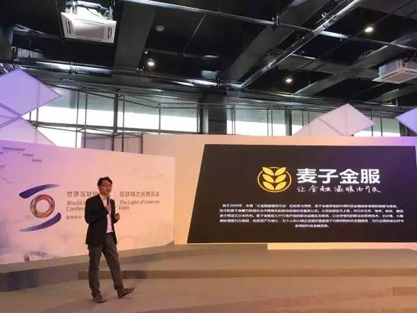
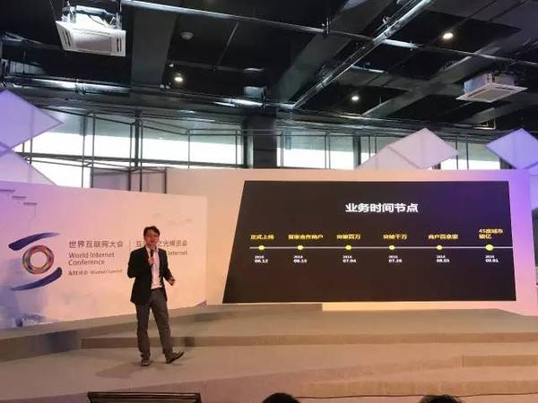

今年6月才上线的麦芽分期犹如一匹黑马
2016年被誉为互金行业的监管之年，众多P2P平台纷纷倒下，更多的则探索消费金融、普惠金融等领域，并均取得了不错的成效。但就是在业内以为P2P平台之争已经进入尾声，后来者很难再迅速冒头的时候，，在5个月之内做到了覆盖全国74个城市，覆盖商户数近700家，11月单日放款额度突破千万。
麦芽分期CEO陈展
医美是女性消费金融的重要场景
见到陈展是在第三届互联网大会闭幕第二天，由于前一天深夜刚刚从乌镇赶回北京，陈展的脸上还满是疲惫，但是谈到刚刚过去的“互联网之光”论坛，他的精神立刻振奋起来。
“这是我第一次参加如此高规格的大会”，陈展递给记者一瓶咖啡说:“今年的互联网大会，能明显感受到互联网金融的影响力，比如邀请了多家金融科技的企业代表和传统银行大佬围绕‘如何通过机制和技术创新推动互联网+普惠金融更好发展’进行深入探讨。”
陈展是作为麦子金服的代表参加的大会。加入麦子金服两年来，陈展先后担任了财神爷爷和麦芽分期两项产品的CEO，并均取得了亮眼的成绩。在本次互联网大会上，陈展就着重展示了麦芽分期是如何利用大数据的采集分析，风控模型的严格把关，在申请流程、审批额度以及贷款利率方面的明显优势。

事实上，麦芽分期是国内消费金融领域的一匹黑马。如今的消费金融，已经不再是一个陌生的词。2015年之后，发展前列的互联网金融平台纷纷布局消费金融，有从校园场景入手的，有做汽车金融的，也有涉足房贷的。而麦芽分期在今年6月才正式上线。如何迅速打开局面，甚至在市场上站稳脚跟?这是陈展最头痛的事情。
“我不怕累，也不怕吃苦，但是麦芽分期上线前真的是我压力最大的日子。”陈展向记者坦言，由于麦芽分期的整个团队都是由他自己从零一手搭建的，产品设计、推广、风控都要抓，再加上之前领衔财神爷爷产品所获得的成功，陈展觉得担负了太多的包袱和期许。
陈展舒了一口气，“对场景的判断是正确的。”
麦芽分期并没有辜负陈展：上线5个月以来，麦芽分期迅速覆盖了全国74个城市，覆盖商户数近700家，11月8日更是单日放款额度突破千万。

做消费金融很多时候要对场景有深度的参与和把控。
陈展所说的场景即消费场景，他认为场景决定流量，在移动互联网普及的今天，场景成为消费金融领域越来越重要的部分，“”
我愿意选择的是女性消费升级的那部分场景。消费升级是指基本的消费能力有了，要做到更好，我想能够做到更好的人，还款能力没有问题，还款意愿也比较好。
“每个人都有场景需求，但我们不可能覆盖所有的场景”，陈展向记者解释，在设计麦芽分期产品的时候，他坚持要从女性用户入手，因为女性相对信用资质好，还款意愿强，这是风控层面的考虑，第二点就是女性消费能力也更强，“”
什么才是女性消费升级领域的刚需?陈展想到了医美。
要真正的了解并且体验整个产品流程，包括医院，包括消费者心理，我都必须自己去试验一下。
为了体验医美的整个流程，陈展甚至自己偷偷去了美容医院做了微针。“第二天起来两边脸上都是血痂，四五天才好”，陈展笑着对记者说，语气让人感觉他做的只是极其平常的小事，“”
对于目前麦芽分期的发展状况，陈展表示比较满意，他透露，到年底，麦芽分期的目标是10亿。
消费金融的痛点在商户 商户的痛点在获客
陈展是92年生人，年级尚小，但已经是一名连续创业者。
“我创业其实就是为了证明自己。”陈展告诉记者，大一的时候，他发现直接高中的“学霸”光环褪去了，考试考不到前几名了，追女孩子也没有追到，思来想去只有创业了，于是陈展决定创业，方向是电子商务。
“为了了解电子商务，我当时做了一件很傻的事，”陈展回忆，在2010年底，他把百度上关于“电子商务”的条目逐条研究过去，一直看了30多页，内心对电子商务基本上有了自己的思路。
从此陈展就与互联网结下了不解之缘，初次创业就选择了校园020，创立了“校园推客网”项目，主要解决主要解决大学生校园网购“最后一公里”的物流问题。后来又尝试过开餐厅，不赚不赔。屡次创业的经历甚至给陈展赢得了“华政刘强东”的称号。
大学毕业之后，陈展还是没有放弃创业的念头，但由于没资金和资源，最终“误打误撞”进入了互联网金融行业，成为了“趣分期”的员工。
“趣分期吸引我的地方是他的CEO管培生计划，我的想法很简单，就是要离CEO更近一点，其实还是想创业。”
如今回想起来，陈展很感激在趣分期的时光，因为在那里他学到了执行力。“不管是财神爷爷还是麦芽分期，能发展的这么快，跟团队执行力有很大的关系。”陈展认为，这正是他从过去经历里面学到的。
在陈展自己看来，他现在取得的成绩来自于他过去的积累、努力上进和积极学习的性格，但是记者认为，在努力以外，陈展有自己独到的商业洞察力和精准的产品思维。
麦芽分期被誉为行业内的黑马，不仅是因为迅速成长的数据，还因为最近在互联网大会推出的“商户信用评级体系”。
为了保持优秀商户合作，麦芽分期创新推出商户信用评级体系。这套体系主要是通过麦芽分期平台大量的精准数据，通过商户的精细化运营，以更加严谨、透明、公平的评价体系对每个商户进行不同维度的综合评估。同时，针对商户的信用度，划分相应的等级。主要是通过更加有序地管理好商户端，以此优化用户体验。
比如分数评级越高的商户，可以获得更高的权益：
针对商户进行信用评级，信用越高的商户，可以获得的权益：更高的额度、更低的利率、更快速高效的审核、和更高的通过率。
“做这个商户信用评级也是出于风控的考虑”，陈展向记者解释，在消费金融领域，其实商户的风险比C端更大，而通过信用评级体系建设，能有效地聚拢优质商户，淘汰不良商户。
有业内人士认为，麦芽分期对于商户信用评级体系的构建，为业内首创，将为商户注入更多的新鲜血液，开启商户与平台携手共进、不断优化服务的良性循环。
消费金融的未来是什么？
经过几年的发展，可以说互联网金融领域已经进入了一个新的发展阶段，不仅仅局限于支付及理财产品，更已经深入到消费领域。根据艾瑞咨询发布的报告称，中国互联网消费金融市场交易规模增速超过200%，2015年整体市场则突破了千亿，到2019年可达到3.398万亿元的水平。
麦芽分期的高速成长也印证了这一市场的巨大潜力。

陈展认为，消费金融本质上其实是一个信用支付的工具，而工具的可替代性是很强的，所以就必须越来越高效。具体来讲，就是利率是不是更低，打款速度是不是更快，审批在风控的阶段能不能更快。
据了解，目前，麦芽分期的申请审批流程全部都是在线的，从提交申请到整个费用最后审批下来大概15分钟左右。而放款可以做到T+0，基本当天能到款，非常便捷快速。
但是麦芽分期又不能仅仅只做一个工具。在以医美为切入口进入市场后，麦芽分期下一步还要进入旅游、婚庆月子、教育培训等领域，而这些领域的客户其实是有一定的重合度的。很有可能，在一段时间之后，麦芽分期能变成一个消费升级的用户平台，这才是生态的构建。
不得不说陈展的战略其实是非常精准的，甚至跟百度有钱花的战略不谋而合。2016年，百度金融推出消费金融业务——百度有钱花，重点推广分期业务，以教育分期为突破口，并逐步推广到家装、租房、医美等领域。研究百度有钱花的布局方向，可以看出百度金融对消费升级市场的信心。
“麦芽分期目前已经完成了团队搭建和销售体系搭建，现在的重点是在深耕医美市场的同时，把更多的场景消费生态通过市场的方式运作起来”，陈展认为，旅游和教育培训正是消费金融领域的下一个风口。
麦芽分期想要构建的消费场景，其实是消费升级领域中的“刚需”。陈展认为，对于现在的年轻人来说，最好的投资就是投资自己，而投资自己的方式绝不是买一些最新的数码产品或者装备一些奢侈品，这些都不是刚需。真正的刚需是在提升自己方面，比如想要提升自己的容貌，想要出去旅游增长自己的见识，想要参加教育培训拓展自己的专业技能。这些都是必要的投资，而愿意在这些方面投资自己的人，相对素质也高，还款意愿和能力都较强。
“我们的slogan是‘为更好的自己’，意义就在于为年轻人提供更加便捷的分期支付服务的同时，帮助他们树立正确的消费及理财观念，”
麦芽分期的愿景是，依托麦子金服对大数据采集、分析和应用，以及移动金融风控技术，降低年轻一代消费升级的门槛与成本，并成为国内泛年轻人服务消费金融分期领域的领头羊。
- 推荐图文
- 推荐人物
- 推荐企业